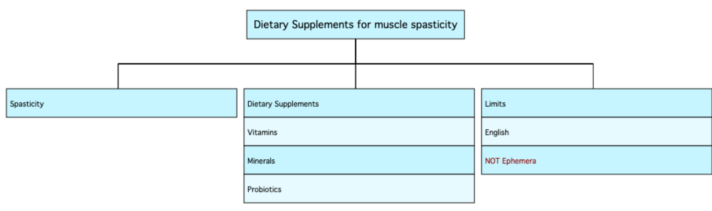

Examples: Systematic Review Chart Maker
Click here to go back to the Chart Maker.
Examples
Here are two examples of how to use the Systematic Review Chart Maker.
Example 1: Dietary supplements for muscle spasticity.
Muscle Spasticity is pretty simple as a concept, but Dietary Supplements is more complicated. In this example, there were several types which needed to be searched separately. In order to represent these, they were entered as Alternative Strategies, separated by semicolons.
This generated a chart with two concepts, and the second concept has 3 alternative strategies. Some limits were also shown. If the Boolean variable NOT is entered at the beginning of a strategy, the chart maker changes the font colour to dark red, in order to draw attention to the NOT operator.

Example 2: Leadership training modules for surgical residents
Here is a slightly more complicated example.
- In the first concept, the alternative strategy contained a word that also happened to be a boolean variable. I put this in quotes for clarity, but this is purely a user decision - I could have entered it without quotes if I preferred.
- In the third concept, some databases provided a subject heading for "Leadership Training", but others did not. Therefore, my primary strategy reflects the preferred search strategy if available, and the second term shows the alternative strategy. To indicate that these were actually two terms combined, I entered the Boolean variable AND.
Here is the chart that was generated by the above entries.
- When the word AND is entered in capitals, the chart maker changes the font colour to blue to draw attention to the AND operator.
- Likewise, if the Boolean variable NOT is entered at the beginning of a strategy, the chart maker changes the font colour to dark red, in order to draw attention to the NOT operator.

Click here to go back to the Chart Maker.